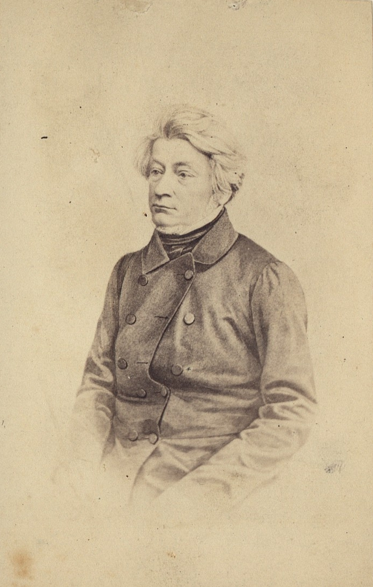

| wiersze |
| Adam Mickiewicz |
| ro-shi |
| kali |
Adam Mickiewicz
Stepy akermańskie
Wpłynąłem na suchego przestwór oceanu, Wóz nurza się w zieloność i jak łódka brodzi, Śród fali łąk szumiących, śród kwiatów powodzi, Omijam koralowe ostrowy burzanu.
Już mrok zapada, nigdzie drogi ni kurhanu
Patrzę w niebo, gwiazd szukam, przewodniczek łodzi
Tam z dala błyszczy obłok - tam jutrzenka wschodzi
To błyszczy Dniestr, to weszła lampa Akermanu.
清香 香
我不认为这就 是你的原因
我喝汤很好喝 但是不，这里突然出现了 400 个不同的项目 这不再有趣了
此外，我喜欢披萨
我也很喜欢玩
我很喜欢睡觉
से दूर रहता
के सूखे विस्तार
मैंने समंदर के सूखे विस्तार में प्रवेश किया, गाड़ी हरियाली में डुबकी लगाती है और नाव की तरह उठती है, घास के मैदानों की सरसराहट की लहरों के बीच, बाढ़ के फूलों के बीच, मैं कोरल थीस्ल से दूर रहता हूं।
अंधेरा पहले से ही गिर रहा है, कहीं कोई सड़क या ठिकाना नहीं है
मैं आकाश को देखता हूं, मैं सितारों, नाव गाइडों की तलाश करता हूं
वहाँ दूर दूर एक बादल चमकता है - वहाँ भोर उठ रही है
यह डेनिस्टर है जो चमकता है, यह एकरमन का दीपक है जो प्रवेश कर चुका है।